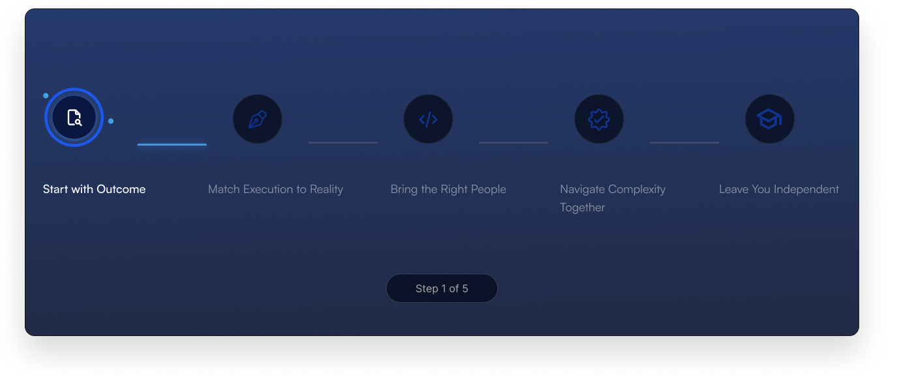

Why Half of Enterprise AI
Initiatives Never Reach
Production
More than half of AI initiatives in regulated industries
never reach production. The reason usually isn’t the...
We run complex technology programmes for enterprises, coordinating every
party from decision to live production.
Why programmes fail
Technology programs rarely fail because the code doesn’t work; they fail on execution. Once the architecture is approved and budgets are released, the
real operational trauma begins. Unforeseen regulations, integration friction,
and compressed timelines inevitably stall the final mile.
You can hire consultants to study the problem. Or you can bring
in a partner who has executed your type of programme, in your regulatory environment, before.
88% of business transformations fail to achieve their
original ambitions
42% of enterprises abandoned most AI initiatives in 2025, up from 17% the prior year.
SAP Global Market Intelligence, 2025.png) What we do
What we do
Every capability we offer connects to a single measure of success,
your technology running in your environment.
Who we serve
Prompt Next works with startups, SMEs, mid-size businesses, and large enterprises.
What we share across every engagement is the same commitment, a working system in your environment,
operated by your team. Six industries carry the highest execution complexity, and the highest need for it.
Core banking upgrades. AI that catches fraud and risk. Built to pass compliance.
Network modernisation and customer platforms that scale without dropping a connection.
Clinical systems and patient data platforms that keep working when it matters most.
Digital infrastructure that makes public services
easier to reach. AI adopted with the safeguards
public trust requires.
Plant systems and data modernised without stopping the production line.
Guest and operations systems that work together,
not around each other.
.png) How we work
How we work
We follow a proven process to turn your goals into real, measurable outcomes
with clarity, collaboration, and continuous improvement.

Partner Ecosystem
Prompt Next does not carry every capability in-house, and we do not pretend to. We
coordinate a vetted network of partner firms across cloud and infrastructure, enterprise
software, data integration, regulatory compliance, and AI deployment, alongside your
internal teams and existing vendors. You manage one relationship. We hold accountability
for the outcome of all of it, with shared responsibility agreed on day one.
Insights
More than half of AI initiatives in regulated industries
never reach production. The reason usually isn’t the...
Integration failure, not the core platform, is the most
common reason enterprise technology programmes st...
When a programme stalls, the instinct is to replace the
vendor. In most cases, that’s the wrong fix, because th...
Our Belief
Most organisations already believe this privately. We built a firm on saying it openly.
We founded Prompt Next on a simple premise: technology execution should be as
rigorous, outcome-focused, and accountable as the strategies it is meant to deliver.
 Vision
VisionA world where technology execution is no longer
the bottleneck to business growth.
 Mission
MissionMake world-class technology execution accessible to every enterprise, from first deployment to scaled infrastructure.
Book a 30-minute strategy call. To understand where you are, what you are trying to achieve, and whether
Prompt Next is the right partner to get you there.
Across every size of organisation and every industry we serve, the pattern is consistent. Technology programmes stall not because the
technology is wrong or the intent is absent. They stall because no single body holds accountability for the full delivery chain, from
decision to production. One organisation. One commitment. We stay until your programme reaches production.